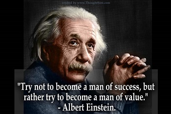
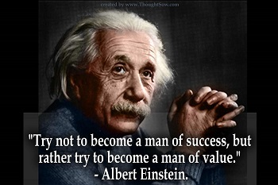

આ નીચેની ઉપલબ્ધતા ગતિશીલ (Dynamic) છે. જ્યારે તમે તેને તપાસો છો ત્યારે મોટે ભાગે પછીની તારીખોમાં જાય છે. ક્યારેક આગળની તારીખ ખુલી શકે છે (1 અથવા 2 અથવા થોડી બેઠકો) (Few Slots); અને આ થોડા સ્લોટ્સ તમે બુક કરી શકો તે પહેલાં અદૃશ્ય થઈ શકે છે.
જો કે કેટલીક વખત યુએસ દૂતાવાસ તમારી વર્તમાન એપોઇન્ટમેન્ટ પહેલાં નજીકના મહિનામાં સામૂહિક ઉપલબ્ધતા ખોલે છે (ઉદાહરણ: કહો કે તેઓ જુલાઈ 2024 માં 50 થી 100 સ્લોટ ખોલી શકે છે). જો કે, આ દુર્લભ અને અનિશ્ચિત છે. દૂતાવાસ સમય તેમજ તે દિવસ જાહેર કરતું નથી કે જેના પર તેઓ આવા સામૂહિક આગળ ના સ્લોટ્સ ઉપલબ્ધ કરાવે છે.
The availability below is dynamic. Iy is Most likely go to later dates than screenshots dates, when you check it. Sometimes the date may open earlier also than screenshot dates(1 or 2 or few seats) (Few Slots); And these few slots may disappear before you can book.
However sometimes US embassies open mass availability in the nearest month before your current appointment (example: say they may open 50 to 100 slots in July 2024). However, this is rare and uncertain.


 


અમારી ફી. Our fees. વિઝા રિન્યુઅલ માટે RS850 ડિસ્કાઉન્ટ. RS850 discount for Visa Renewals
RS5000 + 18% ભારતીય GST = RS5900 પ્રતિ વ્યક્તિ. RS5000 + 18% Indian GST = RS5900 per person.RS15540 હાલમાં વ્યક્તિ દીઠ એમ્બેસી ફી. RS15540 Embassy fee per person currently.